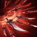
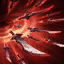

Manual de Noxus
Uma assassina noxiana de precisão mortal, Katarina é conhecida por sua velocidade, agressividade e maestria com lâminas. Como filha de um general lendário, ela carrega tanto o legado da guerra quanto o fardo da excelência.


 
